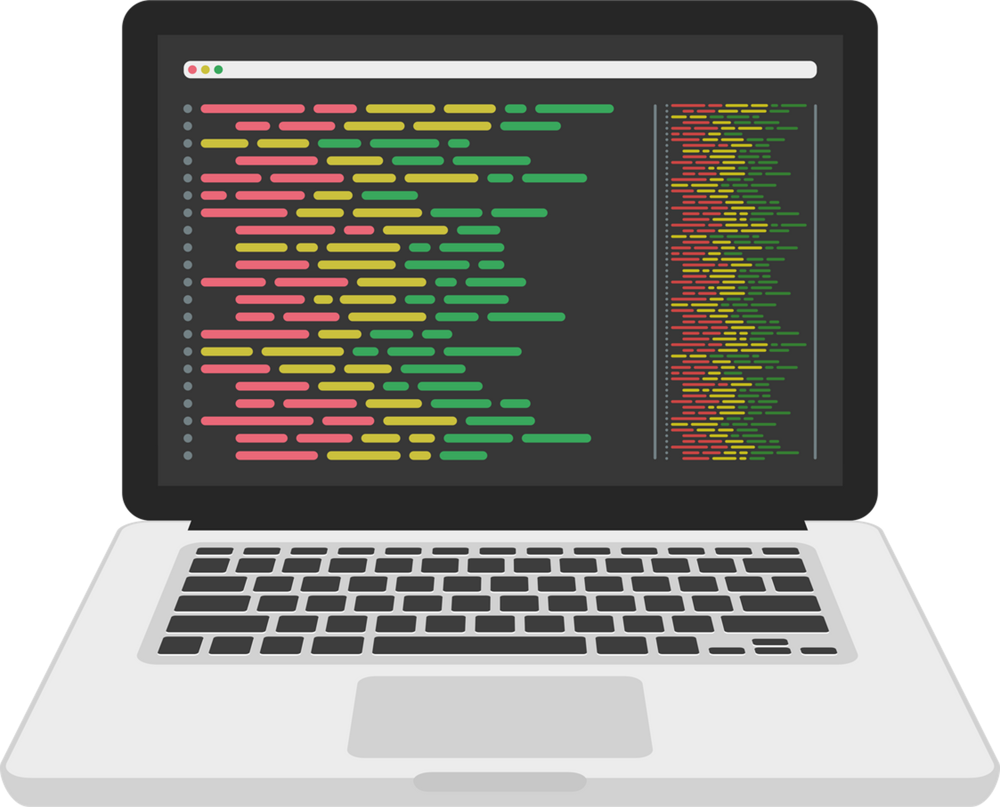

La Arquitectura de un Sistema define la división y estructura de un sistema en subsistemas y establece un marco de control, comunicación y cooperación entre los distintos subsistemas.
La Arquitectura de Software es la organización fundamental de un sistema encarnada en sus componentes, las relaciones entre ellos y el ambiente y los principios que orientan su diseño y evolución.
| Arquitectura del Sistema | Arquitectura del Software | |
|---|---|---|
| Enfoque | Estructura y organización general del sistema completo, incluyendo hardware, software y más. | Estructura y organización de componentes de software dentro del sistema. |
| Nivel de Abstracción | Alto; se ocupa de la integración y relación entre componentes. | Bajo; se centra en cómo se implementan funcionalidades del software. |
| Elementos | Topología de red, distribución física, elección de plataformas de hardware, escalabilidad. | Patrones de diseño, módulos, interfaces, flujos de datos, lógica de negocio. |
El diseño de software es el proceso de concebir y especificar los detalles de cómo el sistema cumplirá las especificaciones de requerimientos establecidas en el análisis.
El objetivo del diseño es "implementar" los requerimientos del usuario.